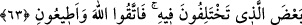

tasarruf ve etkisi şeytandan daha kuvvetli olduğu takdirde, nefis en büyük düşman
sayılmıştır.
Bazıları da şöyle demiştir. Hangi düşmana iyilik etsen bir zaman sonra sana dost olur.
Nefis ise böyle değildir. Onu ne kadar hoş tutarsan sana o kadar fazla muhalefet eder.
Kimin muradını yerine getirsen sana itâat eder. Nefis ise böyle değildir. O dileğini
aldıkça serkeşlik eder.
63. Îsâ, açık delillerle geldiği zaman demişti ki: Ben size hikmeti getirdim ve
ayrılığa düştüğünüz şeylerden bir kısmını size açıklamak için geldim. Öyleyse
Allah’tan korkun ve bana itâat edin.
“Îsâ, açık delillerle” mûcizeler yahut İncil âyetleri veya bir takım dinî prensiplerle
“geldiği zaman demişti ki: Ben size hikmeti” İncil’i yahut şerîatı öğretmek için
“getirdim ve ayrılığa düştüğünüz şeylerden bir kısmını” din işlerini “size açıklamak
için geldim. Öyleyse” bana muhalefet etmek husûsunda “Allah’tan korkun ve” Allah
Teâlâ’dan size tebliğ ettiğim hususlarda “bana itâat edin.” Çünkü bana itâat hakka
itâattir.
“Ayrılığa düşülen şeylerden bir kısmı”ndan maksad, din işleridir. Zîrâ dünya işlerinin
beyanı Peygamberimiz (s.a.)’in vazifesi değildir. Nitekim Efendimiz (s.a.) şöyle
buyurmuştur: “Siz dünya işlerinizi daha iyi bilirsiniz.”[187]
Es’ile-i Mukhame’de şöyle denilmiştir: Âyette “ayrılığa düştükleri şeylerin bir
kısmı” diye geçmektedir. Oysa peygamberler tüm ihtilaflı konuları beyan için
gönderilmiştir. Cevap şudur: İbn Abbas (r.a.)’dan rivâyet edildiğine göre âyette geçen
“ba’z” (cüz) kelimesi kül (hepsi) mânâsındadır. Aynü’l-meâric’de böyle denilmektedir.
Doğrusu şudur: Ba’z kelimesinden kül, kül kelimesinden de ba’z murad edilebilir.
Nitekim “sonra her dağın başına onlardan bir parça koy” (el-Bakara, 2/260) ifâdesi,
bu kabilden yani cüz kelimesiyle “kül” murad edildiği örneklerdendir.
Bazı mânâ ehli de şöyle demiştir: Ümmet peygambere bir takım faydasız sorular
soruyordu. Onun için peygamber de onlara “Ben size hikmeti getirdim ve ayrılığa
düştüğünüz şeylerden bir kısmını size açıklamak için geldim” demiştir. Yani
“açıklanmasında size faydalı olacak soruları cevaplandıracağım” demektir.
Âyette şuna da işâret edilmektedir ki peygamberler, kitabı Allah’tan getirdikleri gibi,
hikmeti de Allah’ın kendilerine ilham ettiği ilimler (sünnet-hadisler) olarak
sunmaktadırlar. Nitekim bu mânâda: “(Peygamber) onlara kitabı ve hikmeti (sünnet
ve hadisleri) öğretecek” (el-Bakara, 2/151; Âl-i İmran, 3/164) buyrulmaktadır. İşte